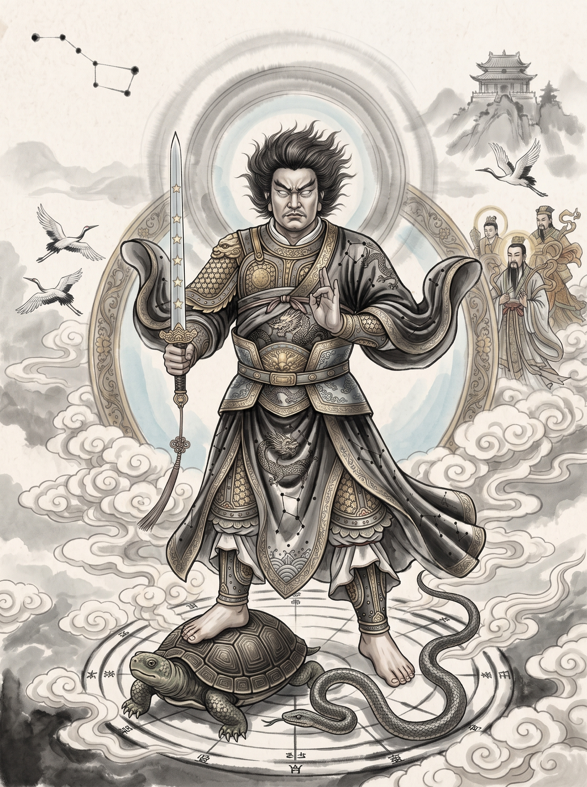

主祀北極玄天上帝（帝爺公），腳踏龜蛇、手持七星寶劍，掌管北方水德，專司消災辟邪、延年益壽、保佑闔境平安。縱隔千里，虔誠祈求皆能感應道交。

玄天上帝本為北方二十八宿之玄武星宿化身，統攝北方天界。尊容披髮跣足、手秉七星神劍、腳踏龜蛇二將。因具備至陽消煞、統理水德之神能，專司除邪辟惡、治病保命、啟迪前程。信眾凡有坎坷疑慮，虔心向帝爺公抽籤請旨，往往指點切中機鋒。
隨侍玄帝左右之威武尊神。巡按四海，護佑鄉里掃除穢毒惡煞，使凶氣消散，萬象吉昌。
保佑：辟邪護身・出入平安主掌人間延嗣安胎之神。保佑孕期順產、嬰幼免除驚煞、孩童乖巧安康，為家庭子息守護慈神。
保佑：祈子延齡・母子均安守護竹篙厝庄境土地五穀豐登，亦兼司在地財源利祿，庇蔭店家開市大吉、受薪階級正財亨通。
保佑：招財鎮宅・四方利祿德高厝上帝廟古名「竹篙厝上帝廟」，座落於台南市東區德高里，為昔時台灣府城東郊「仁和里竹篙厝庄」開闢以來的公廟信仰核心。
早期拓墾先民披荊斬棘之際，為抗禦瘟瘴外患，自原鄉恭迎玄天上帝香火庇護，於庄中築草堂安座。隨後經嘉慶、光緒年間屢次倡建，乃至戰後地方合力重建宏偉廟貌。廟中典藏豐富歷史匾額與石造遺跡，見證了竹篙厝開庄以降拓墾繁衍與神明護國佑民的輝煌歲月。
依循台南道教傳統求籤科儀：靜心報號 ➔ 誠敬抽籤 ➔ 擲筊請示 ➔ 奉領籤文
請信士先閉目定心，心中默念自己姓名、農曆生辰、現居地址，並專注於一件心中疑難。
籤筒搖動中，感應帝爺公指引……
所抽得籤號需向神明請示，需得「聖筊（一平一凸）」方為此籤。
依循道教科儀呈奏疏文，初一十五誦經祈安迴向
智慧大開・金榜題名
消災納吉・逢凶化吉
招財進寶・事業亨通
祈求麟兒・長輩添壽
每月初一、十五定期上稟疏文，將神明的庇佑融入生活
現代生活節奏緊湊，許多善信因工作繁忙、身處外地，或是受限於大樓住宅的環保規範，無法親自到廟宇上香化金。本廟特設「代客奉香」服務，由廟祝代為為您圓滿敬意。
每月初一、十五代辦清香、壽金與疏文稟報。可隨時取消。
涵蓋全年 24 次朔望祈安，將您的祈願長留帝爺公案前，福祿綿長。
※ 費用包含：頂級臥香、祈安壽金一份、專屬疏文撰寫與廟祝代稟服務費。